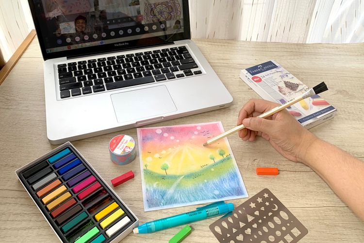
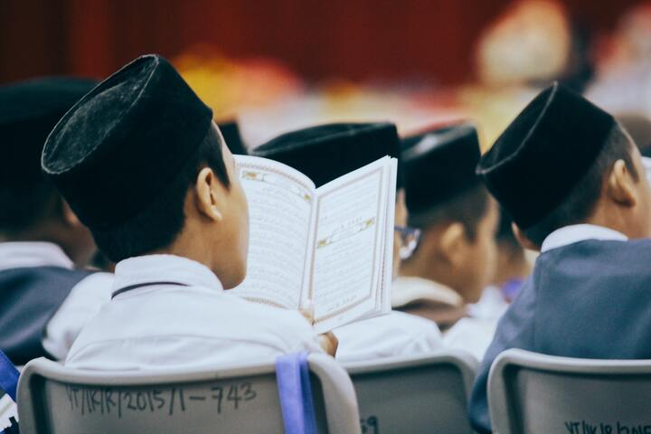
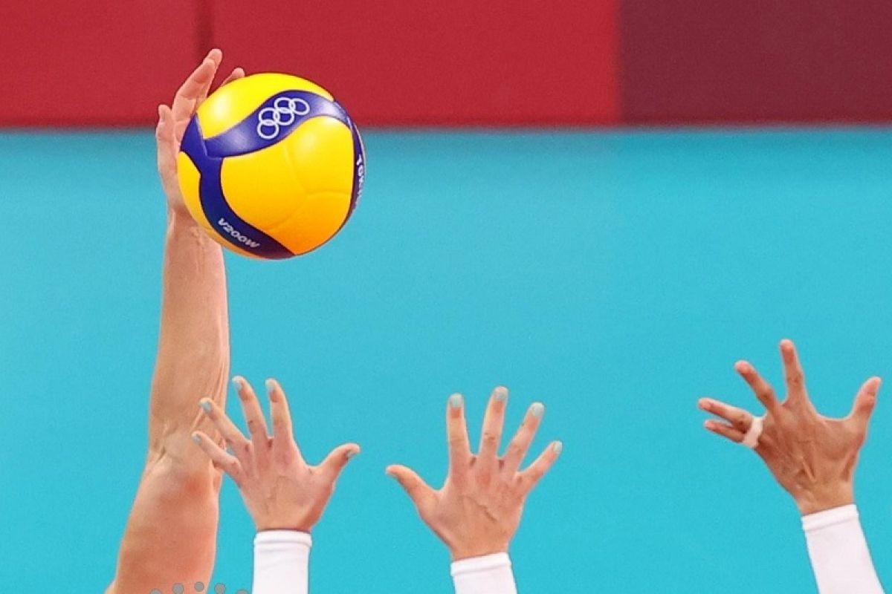

HOBI
Hobi adalah kegiatan yang dilakukan secara sukarela dan menyenangkan di luar rutinitas sehari-hari. Ini adalah waktu yang dihabiskan untuk mengejar minat pribadi atau kegemaran tertentu tanpa adanya tekanan atau kewajiban. Hobi tidak hanya memberikan hiburan dan relaksasi, tetapi juga bisa menjadi sumber kepuasan pribadi, perkembangan diri, dan pertemuan sosial dengan orang-orang yang memiliki minat yang sama. Berikut masinh-masing hobi kami :
Devi : Desain Grafis
Hobi desain grafis adalah kegiatan yang melibatkan penggunaan elemen-elemen desain, seperti tipografi, gambar, dan warna, untuk menciptakan komunikasi visual yang menarik dan efektif. Ini melibatkan pemahaman tentang prinsip-prinsip desain, perangkat lunak desain grafis, dan kreativitas untuk menyampaikan pesan atau konsep tertentu dalam bentuk gambar atau ilustrasi. Hobi ini sering kali mencakup kegiatan seperti merancang logo, poster, kartu ucapan, atau desain web. Selain sebagai bentuk ekspresi kreatif, hobi desain grafis juga bisa menjadi keterampilan yang berguna dalam karir di bidang periklanan, media, atau industri kreatif lainnya.
Tiara : Menggambar

Hobi menggambar adalah kegiatan yang melibatkan penciptaan gambar atau ilustrasi dengan menggunakan berbagai media seperti pensil, pensil warna, cat air, atau bahkan media digital. Ini adalah cara untuk mengekspresikan kreativitas dan imajinasi seseorang melalui bentuk, garis, warna, dan komposisi. Menggambar bisa menjadi waktu yang menyenangkan dan memuaskan, di mana seseorang dapat melupakan segala kekhawatiran dan membiarkan pikiran mereka melayang bebas. Selain itu, menggambar juga merupakan cara yang efektif untuk melatih keterampilan visual, observasi, dan ketelitian. Dengan menggambar, seseorang dapat mengeksplorasi berbagai gaya, teknik, dan subjek, mulai dari sketsa sederhana hingga lukisan berwarna penuh yang rumit.
Fara : Menulis
Hobi menulis adalah kegiatan yang melibatkan penyaluran ekspresi dan kreativitas melalui kata-kata tertulis. Ini bisa berupa menulis cerita pendek, puisi, esai, atau artikel di blog. Melalui hobi ini, seseorang dapat mengekspresikan ide, pemikiran, perasaan, dan pengalaman pribadi mereka dengan cara yang unik dan khas. Menulis juga bisa menjadi cara untuk menyampaikan pesan, menginspirasi orang lain, atau mengabadikan momen dalam hidup. Selain itu, hobi menulis juga bisa menjadi sarana untuk meningkatkan keterampilan komunikasi, pemikiran kritis, dan imajinasi.
Ridwan : Travelling
Hobi traveling adalah kegiatan yang melibatkan eksplorasi dan penjelajahan tempat-tempat baru, baik dalam maupun luar negeri. Para penyuka travelling senang mengeksplorasi keindahan alam, budaya, sejarah, dan kuliner dari berbagai destinasi. Mereka menikmati pengalaman bertemu dengan orang-orang baru, belajar tentang kehidupan lokal, serta menciptakan kenangan yang tak terlupakan. Hobi ini juga dapat membantu memperluas wawasan, memperkaya pengalaman hidup, dan memberikan kesempatan untuk melepaskan diri dari rutinitas sehari-hari.
Badrus : Mengaji

Hobi mengaji adalah kegiatan yang dilakukan oleh banyak individu yang beragama Islam. Mengaji merupakan proses belajar membaca, memahami, dan menghafal Al-Quran. Selain itu, hobi mengaji juga melibatkan pemahaman terhadap ajaran-ajaran agama Islam dan konteksnya dalam kehidupan sehari-hari. Orang-orang yang memiliki hobi mengaji sering menghabiskan waktu untuk membaca Al-Quran, mengikuti kelas atau kelompok pengajian, dan berinteraksi dengan komunitas Muslim lainnya untuk meningkatkan pemahaman dan keterampilan mereka dalam memahami dan mengamalkan ajaran agama Islam. Hobi mengaji tidak hanya memberikan kepuasan spiritual, tetapi juga memperkuat hubungan dengan Allah dan memperdalam pemahaman tentang ajaran Islam.
Adis : Olahraga

Olahraga adalah kegiatan fisik yang dilakukan secara teratur untuk meningkatkan kesehatan dan kebugaran tubuh. Hobi olahraga bisa bervariasi, mulai dari olahraga tim seperti sepak bola dan bola basket, olahraga individu seperti berlari dan berenang, hingga olahraga yang melibatkan seni bela diri seperti karate dan taekwondo. Selain manfaat fisik, olahraga juga membantu meningkatkan keterampilan sosial, ketahanan mental, dan disiplin. Banyak orang menemukan kebahagiaan dan keseimbangan dalam kehidupan mereka melalui aktifitas olahraga yang mereka gemari.